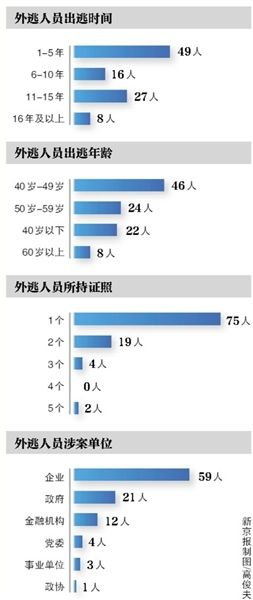

中纪委发布消息显示，国际刑警组织中国国家中心局近日集中公布了针对100名涉嫌犯罪的外逃国家工作人员、重要腐败案件涉案人等人员的红色通缉令。新京报记者梳理发现，目前多数外逃人员下落不明。

红色通缉令公布的100名外逃人员中，出逃时年龄在40岁到49岁之间的人最多，达到46人。在50岁到59岁之间出逃的人次之，共有24人。
从外逃时间上看，出逃时间在5年以下的最多，共49人。从出逃地点来看，外逃人员的首选是美国，共有40人可能选择在美国藏匿。不过，可能逃至两个或两个以上国家和地区的外逃人员有21人，持有两个或两个以上证照信息的多达25人。
在100名被通缉的外逃人员名单中，排名第二的李华波在新加坡被判刑。李华波曾任江西省鄱阳县财政局经济建设股股长，他在2006年10月至2010年12月，多次骗取鄱阳县财政局存放在鄱阳县农村信用联社的资金9400万元。2011年1月，李华波外逃新加坡。据新加坡媒体报道，2013年4月，李华波因利用本地银行户头接收18万余新加坡元的赃款，被判刑15个月。